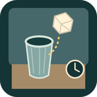

Blanche Studio
서울의 1인 스튜디오가 만드는 짧고 가벼운 게임 · Small, cozy games from a one-person studio in Seoul.
김밥 지켜! Gimbap Guardians
개미떼로부터 김밥 8조각을 지키는 소풍 타워 디펜스
종이공을 구겨 휴지통에 던지는 퇴근 투척 게임
개미떼로부터 김밥 8조각을 지키는 소풍 타워 디펜스

칼퇴 슛 Clock-Out Toss종이공을 구겨 휴지통에 던지는 퇴근 투척 게임
고객 지원 · Support
문의 · Contact: qorrmdgjs@gmail.com